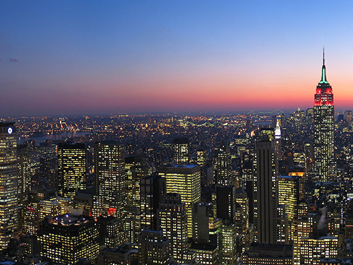

Manhattan
Geography
Manhattan is one of the five boroughs of New York City, geographically the smallest but also the most densely populated in the city. Located primarily on the island of Manhattan at the mouth of the Hudson River, the borough is conterminous with New York County, an original county of the U.S. state of New York. The borough and county consist of Manhattan Island and several small adjacent islands: Roosevelt Island, Randall’s Island, Wards Island, Governors Island, Liberty Island, part of Ellis Island, Mill Rock, and U Thant Island; as well as Marble Hill, a small area on the mainland bordering the Bronx. The City of New York originated at the southern tip of Manhattan and expanded northward.
Characteristics
New York County is the most densely populated county in the United States and is one of the most densely populated areas in the world, with a 2010 population of 1,585,873 living in a land area of 22.96 square miles, or 69,464 residents per square mile, more dense than any individual American city. It is also one of the wealthiest counties in the United States, with a 2005 per capita income above $100,000. Manhattan is the third-largest of New York’s five boroughs in population, after Brooklyn and Queens, and it is the smallest borough in land area.